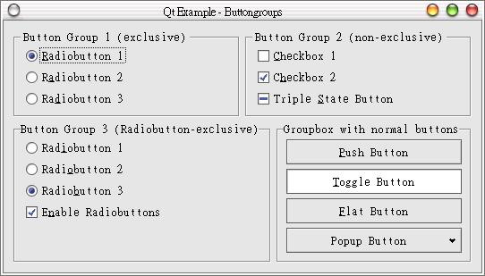
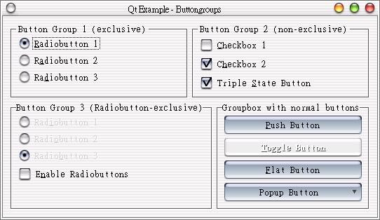

QPushButton、QCheckBox、QRadioButton等Widget類別，它們都繼承自QButton類別，在Qt安裝後所提供的線上範例，有一個程式將這些類別整合在一起加以顯示，這邊我們解釋這個程式，這個程式雖然長，但其實很簡單。
首先編輯定義檔buttongroups.h：
#ifndef BUTTONS_GROUPS_H
#define BUTTONS_GROUPS_H
#include <qwidget.h>
class QCheckBox;
class QRadioButton;
class ButtonsGroups : public QWidget
{
Q_OBJECT
public:
ButtonsGroups( QWidget *parent = 0, const char *name = 0 );
protected:
QCheckBox *state;
QRadioButton *rb21, *rb22, *rb23;
protected slots:
void slotChangeGrp3State();
};
#endif
其中class QCheckBox;與class QRadioButton;是一個技巧，我們在這邊還沒有正式使用到這兩個類別，所以我們「向前宣告」這兩個類別；接下來我們編輯buttongroups.cpp：
#include "buttongroups.h"
#include <qpopupmenu.h>
#include <qbuttongroup.h>
#include <qlayout.h>
#include <qradiobutton.h>
#include <qcheckbox.h>
#include <qgroupbox.h>
#include <qpushbutton.h>
/*
* Constructor
*
* Creates all child widgets of the ButtonGroups window
*/
ButtonsGroups::ButtonsGroups( QWidget *parent, const char *name )
: QWidget( parent, name )
{
// Create Widgets which allow easy layouting
QVBoxLayout *vbox = new QVBoxLayout( this, 11, 6 );
QHBoxLayout *box1 = new QHBoxLayout( vbox );
QHBoxLayout *box2 = new QHBoxLayout( vbox );
// ------- first group
// Create an exclusive button group
QButtonGroup *bgrp1 = new QButtonGroup( 1, QGroupBox::Horizontal,
"Button Group 1 (exclusive)", this);
box1->addWidget( bgrp1 );
bgrp1->setExclusive( TRUE );
// insert 3 radiobuttons
QRadioButton *rb11 = new QRadioButton( "&Radiobutton 1", bgrp1 );
rb11->setChecked( TRUE );
(void)new QRadioButton( "R&adiobutton 2", bgrp1 );
(void)new QRadioButton( "Ra&diobutton 3", bgrp1 );
// ------- second group
// Create a non-exclusive buttongroup
QButtonGroup *bgrp2 = new QButtonGroup( 1, QGroupBox::Horizontal,
"Button Group 2 (non-exclusive)", this );
box1->addWidget( bgrp2 );
bgrp2->setExclusive( FALSE );
// insert 3 checkboxes
(void)new QCheckBox( "&Checkbox 1", bgrp2 );
QCheckBox *cb12 = new QCheckBox( "C&heckbox 2", bgrp2 );
cb12->setChecked( TRUE );
QCheckBox *cb13 = new QCheckBox( "Triple &State Button", bgrp2 );
cb13->setTristate( TRUE );
cb13->setChecked( TRUE );
// ------------ third group
// create a buttongroup which is exclusive
// for radiobuttons and non-exclusive for all other buttons
QButtonGroup *bgrp3 = new QButtonGroup( 1, QGroupBox::Horizontal,
"Button Group 3 (Radiobutton-exclusive)", this );
box2->addWidget( bgrp3 );
bgrp3->setRadioButtonExclusive( TRUE );
// insert three radiobuttons
rb21 = new QRadioButton( "Rad&iobutton 1", bgrp3 );
rb22 = new QRadioButton( "Radi&obutton 2", bgrp3 );
rb23 = new QRadioButton( "Radio&button 3", bgrp3 );
rb23->setChecked( TRUE );
// insert a checkbox...
state = new QCheckBox( "E&nable Radiobuttons", bgrp3 );
state->setChecked( TRUE );
// ...and connect its SIGNAL clicked() with the SLOT slotChangeGrp3State()
connect( state, SIGNAL( clicked() ), this, SLOT( slotChangeGrp3State() ) );
// ------------ fourth group
// create a groupbox which layouts its childs in a columns
QGroupBox *bgrp4 = new QButtonGroup( 1, QGroupBox::Horizontal,
"Groupbox with normal buttons", this );
box2->addWidget( bgrp4 );
// insert four pushbuttons...
(void)new QPushButton( "&Push Button", bgrp4, "push" );
// now make the second one a toggle button
QPushButton *tb2 = new QPushButton( "&Toggle Button", bgrp4, "toggle" );
tb2->setToggleButton( TRUE );
tb2->setOn( TRUE );
// ... and make the third one a flat button
QPushButton *tb3 = new QPushButton( "&Flat Button", bgrp4, "flat" );
tb3->setFlat(TRUE);
// .. and the fourth a button with a menu
QPushButton *tb4 = new QPushButton( "Popup Button", bgrp4, "popup" );
QPopupMenu *menu = new QPopupMenu(tb4);
menu->insertItem("Item1", 0);
menu->insertItem("Item2", 1);
menu->insertItem("Item3", 2);
menu->insertItem("Item4", 3);
tb4->setPopup(menu);
}
/*
* SLOT slotChangeGrp3State()
*
* enables/disables the radiobuttons of the third buttongroup
*/
void ButtonsGroups::slotChangeGrp3State()
{
rb21->setEnabled( state->isChecked() );
rb22->setEnabled( state->isChecked() );
rb23->setEnabled( state->isChecked() );
}
程式雖然長，但絕大多數都只是在配置元件，先看看註解，您可以大致瞭解每一個元件是如何配置的；接下來是最後一個主函式main.cpp的編輯：
#include "buttongroups.h"
#include <qapplication.h>
int main( int argc, char **argv )
{
QApplication a( argc, argv );
ButtonsGroups buttonsgroups;
buttonsgroups.resize( 500, 250 );
buttonsgroups.setCaption( "Qt Example - Buttongroups" );
a.setMainWidget( &buttonsgroups );
buttonsgroups.show();
return a.exec();
}
這個程式使用四個QButtonGroups將版面分為四個部份，每個部份置入一些QButton的子類別Widget，我們解說一些主要的方法，setExclusive()可以設定QButtonGroups中的QButton類別子類別彼此之間是否互斥：
bgrp1->setExclusive( TRUE );
上面這行主要讓您注意字串的指定，&這個字元指定其下一個字元在顯示時加上底線，也就是顯示為Radiobutton 1，而指定的字元也是快捷鍵（accelerator key）的字元，例如這個例子可以使用Alt+R來將焦點移至rb11：
QRadioButton *rb11 = new QRadioButton( "&Radiobutton 1", bgrp1 );
設定核取方塊為三態，也就是擁有勾取、未勾取與關閉三種狀態，不過在某些視窗外觀下不一定會顯示：
cb13->setTristate( TRUE );
將Signal - clicked()連接至Slot - slotChangeGrp3State()，slotChangeGrp3State()會將第三個Group的單選鈕設定為失效，也就是下面這個程式：
connect( state, SIGNAL( clicked() ), this, SLOT( slotChangeGrp3State() ) );
setEnabled()可以設定單選鈕是否啟用：
void ButtonsGroups::slotChangeGrp3State()
{
rb21->setEnabled( state->isChecked() );
rb22->setEnabled( state->isChecked() );
rb23->setEnabled( state->isChecked() );
}
QPushButton可以設定為ToggledButton，這是由setToggleButton()來設定，我們並使用setOn()來設定其預設狀態為按下：
QPushButton *tb2 = new QPushButton( "&Toggle Button", bgrp4, "toggle" );
tb2->setToggleButton( TRUE );
tb2->setOn( TRUE );
設定QPushButton的外觀為不突起的按鈕外觀：
QPushButton *tb3 = new QPushButton( "&Flat Button", bgrp4, "flat" );
tb3->setFlat(TRUE);
在QPushButton上設定QPopupMenu，也就是蹦現式選單，我們必須指定QPopupMenu屬於tb4，並設定tb4按下時顯示menu（setPopup()）：
QPushButton *tb4 = new QPushButton( "Popup Button", bgrp4, "popup" );
QPopupMenu *menu = new QPopupMenu(tb4);
menu->insertItem("Item1", 0);
menu->insertItem("Item2", 1);
menu->insertItem("Item3", 2);
menu->insertItem("Item4", 3);
tb4->setPopup(menu);
以下是執行結果：

有的效果在某些主題下無法顯示，以下是另一個桌面主題所顯示的效果，我們看不到QCheckBox的三態效果：

|
|